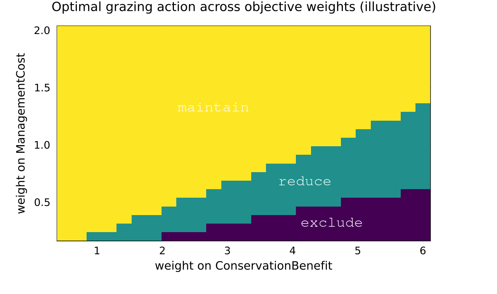
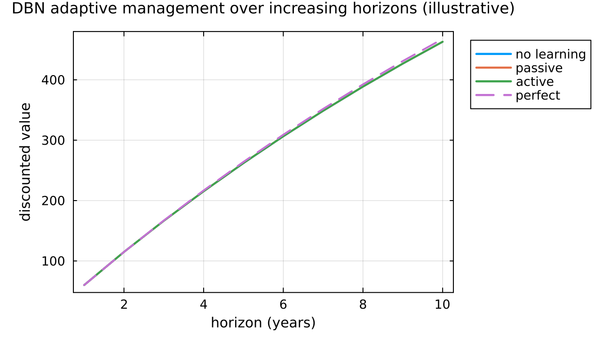

Dynamic Bayesian networks, multi-objective grazing, and model discrimination
Simon Frost
- Motivation
- 1. Multi-objective grazing influence diagram
- 2. Mutual information versus EVSI
- 3. Model-discrimination EVSI across rival Bayesian networks
- 4. Dynamic Bayesian networks to sequential adaptive management
Motivation
Ecological decisions are often built in graphical-model packages before anyone writes a payoff table: static Bayesian networks (BayesianNetworks.jl), influence diagrams with multiple utility nodes (InfluenceDiagrams.jl), and lag-1 dynamic Bayesian networks (DBNs) that represent ecosystem feedback over time.
This vignette demonstrates four horizontal bridges in DecisionAnalysis.jl built on the reference ecological models shipped with InfluenceDiagrams.jl and BayesianNetworks.jl:
- Multi-objective influence diagrams (
normal_form(diagram; multi_objective=true)), separating conservation benefit from management cost forParetoFrontand two-way sensitivity analysis; - Mutual information versus EVSI, comparing
BayesianNetworkInference.sensitivity(Marcot 2012) directly againstDecisionAnalysis.evsi; - Model-discrimination EVSI across rival Bayesian networks (
normal_form(hypotheses; observed=...)); - Dynamic Bayesian networks to sequential adaptive management (
normal_form(::DynamicBayesModel)→adaptive_management), cross-checked withFiniteKernels.FiniteKernelandResilienceCore.MarkovKerneltransitions.
All numbers in the reference models are those shipped with InfluenceDiagrams.jl and BayesianNetworks.jl (SPEC §43, §45, §46); every decision analysis below is illustrative.
1. Multi-objective grazing influence diagram
InfluenceDiagrams.reference_grazing_model() models rangeland grazing management (:exclude, :reduce, :maintain) under uncertain Climate and CurrentVegetation, with two separate utility nodes: ConservationBenefit (0 or 100 for low or high biodiversity) and ManagementCost (−40, −15 or 0). Passing multi_objective=true to normal_form uses BayesianNetworkInference.VariableElimination and keeps each utility node as its own PayoffTable.
using DecisionAnalysis
using InfluenceDiagrams: InfluenceDiagrams
using BayesianNetworks: BayesianNetworks
using BayesianNetworkInference: BayesianNetworkInference
using FiniteKernels: FiniteKernels
include(joinpath("..", "_common.jl"))
const ID = InfluenceDiagrams
const BN = BayesianNetworks
const BNI = BayesianNetworkInference
grazing = ID.reference_grazing_model()
nf_mo = normal_form(grazing; states=[:Climate, :CurrentVegetation],
multi_objective=true, baseline=:maintain)
# Inspect expected score on each objective separately and the Pareto front.
eu_ben = aggregate(Expectation(), DecisionProblem(nf_mo.objectives.ConservationBenefit,
nf_mo.problem.belief))
eu_cost = aggregate(Expectation(), DecisionProblem(nf_mo.objectives.ManagementCost,
nf_mo.problem.belief))
pf = decide(nf_mo.objectives, nf_mo.problem.belief, ParetoFront())
md_table(["action", "E[ConservationBenefit]", "E[ManagementCost]", "summed EU",
"Pareto-efficient?"],
[[a, eu_ben[i], eu_cost[i], eu_ben[i] + eu_cost[i], a in pf.chosen]
for (i, a) in enumerate(action_labels(nf_mo.problem.payoff))]; digits=2)| action | E[ConservationBenefit] | E[ManagementCost] | summed EU | Pareto-efficient? |
|---|---|---|---|---|
exclude | 42.42 | -40 | 2.42 | yes |
reduce | 39.84 | -15 | 24.84 | yes |
maintain | 36.52 | 0 | 36.52 | yes |
All three actions sit on the Pareto front because excluding or reducing grazing raises expected biodiversity at a direct management cost. With the reference weights (1:1), :maintain wins in every state, so information has zero value; scaling the biodiversity benefit relative to cost reveals where the optimal policy switches.
# Two-way policy regions varying the weight on ConservationBenefit (w1) and an additive
# bonus for excluding grazing in dry years (w2), illustrative.
base_zero = DecisionProblem(PayoffTable(action_labels(nf_mo.problem.payoff),
state_labels(nf_mo.problem),
zeros(3, length(state_labels(nf_mo.problem)))),
nf_mo.problem.belief; baseline=:maintain)
ben_tbl = nf_mo.objectives.ConservationBenefit
cost_tbl = nf_mo.objectives.ManagementCost
tw = two_way_policy_regions(base_zero, ben_tbl, cost_tbl;
range1=(0.5, 6.0), range2=(0.2, 2.0), grid=(25, 25))
md_table(["action", "share of (benefit weight, cost weight) grid"],
[[a, share] for (a, share) in pairs(tw.shares)]; digits=3)| action | share of (benefit weight, cost weight) grid |
|---|---|
exclude | 0.099 |
reduce | 0.198 |
maintain | 0.702 |
acts = action_labels(nf_mo.problem.payoff)
idx_map = Dict(a => i for (i, a) in enumerate(acts))
Z = [idx_map[a] for a in tw.action_grid]
plt_tw = Plots.heatmap(tw.t1, tw.t2, Z';
xlabel="weight on ConservationBenefit",
ylabel="weight on ManagementCost",
title="Optimal grazing action across objective weights (illustrative)",
colorbar=false, c=:viridis)
for (i, a) in enumerate(acts)
coords = [(tw.t1[r], tw.t2[c]) for r in axes(Z, 1), c in axes(Z, 2)
if Z[r, c] == i]
isempty(coords) && continue
mx = sum(first, coords) / length(coords)
my = sum(last, coords) / length(coords)
Plots.annotate!(plt_tw, mx, my, Plots.text(String(a), :white, :bold, 10))
end
png_figure(plt_tw)
2. Mutual information versus EVSI
In ecological Bayesian-network practice, variables are commonly ranked by mutual information (entropy reduction on the target node, Marcot
- using
BayesianNetworkInference.mutual_information. Yet
information theory alone ignores the actions and payoffs: a variable with high mutual information can still have zero expected value of sample information (evsi) if the same action remains optimal after every possible observation.
habitat = BN.reference_habitat_model()
# Compare mutual information with Occupancy against EVSI under two illustrative irrigation
# effort penalties: a small penalty (-5) where :high always dominates, and a balanced
# penalty (-14) where knowing Climate or GrazingPressure changes the decision.
mi_climate = BNI.mutual_information(habitat, :Climate, :Occupancy)
mi_grazing = BNI.mutual_information(habitat, :GrazingPressure, :Occupancy)
nf_low = normal_form(habitat; decision=:Irrigation, states=(:Climate, :GrazingPressure),
outcome=[:Occupancy => [0, 100], :Irrigation => (low=0, high=-5)],
observed=(), baseline=:low)
nf_low_c = normal_form(habitat; decision=:Irrigation, states=:Climate,
outcome=[:Occupancy => [0, 100], :Irrigation => (low=0, high=-5)],
baseline=:low)
nf_low_g = normal_form(habitat; decision=:Irrigation, states=:GrazingPressure,
outcome=[:Occupancy => [0, 100], :Irrigation => (low=0, high=-5)],
baseline=:low)
nf_bal_c = normal_form(habitat; decision=:Irrigation, states=:Climate,
outcome=[:Occupancy => [0, 100], :Irrigation => (low=0, high=-14)],
baseline=:low)
nf_bal_g = normal_form(habitat; decision=:Irrigation, states=:GrazingPressure,
outcome=[:Occupancy => [0, 100], :Irrigation => (low=0, high=-14)],
baseline=:low)
md_table(["variable", "mutual info with Occupancy (bits)",
"VOI at penalty −5", "VOI at penalty −14"],
[["Climate", mi_climate, evpi(nf_low_c.problem), evpi(nf_bal_c.problem)],
["GrazingPressure", mi_grazing, evpi(nf_low_g.problem),
evpi(nf_bal_g.problem)]]; digits=4)| variable | mutual info with Occupancy (bits) | VOI at penalty −5 | VOI at penalty −14 |
|---|---|---|---|
| Climate | 0.0031 | 0.2851 | 0 |
| GrazingPressure | 0.0036 | 0 | 0 |
At an irrigation penalty of $-5$, GrazingPressure carries higher mutual information about Occupancy (0.0036 bits) than Climate (0.0031 bits), yet its decision value is exactly zero, while learning Climate yields positive value (0.285 points) because climate flips the optimal irrigation choice. At a steep penalty of $-14$, low irrigation dominates in every state, so both variables have zero decision value despite unchanged mutual information.
3. Model-discrimination EVSI across rival Bayesian networks
When two ecological groups disagree on the network’s conditional probability tables, normal_form accepts a nested collection of hypothesis networks together with pre-decision observed variables, returning the exact model-discrimination Experiment for evsi.
# Two rival hypotheses: the published habitat network vs. a drier, low-response alternative.
h_published = habitat
h_dry = BN.bind_cpt(habitat,
[:Climate => [0.65, 0.25, 0.10],
:Occupancy => [0.65 0.35; 0.45 0.55]])
by_action(m) = (; low=BN.do_intervention(m, :Irrigation => :low),
high=BN.do_intervention(m, :Irrigation => :high))
nf_hyp = normal_form((; published=by_action(h_published),
dry_alternative=by_action(h_dry));
outcome=[:Occupancy => [0, 100], :Irrigation => (low=0, high=-3)],
observed=(:Climate, :GrazingPressure),
prior=[1 // 2, 1 // 2], baseline=:low)
md_table(["information source", "value (occupancy-equivalent points)"],
[["EVPI (know which model is right)", evpi(nf_hyp.problem)],
["EVSI of observing Climate", evsi(nf_hyp.problem, nf_hyp.experiments.Climate)],
["EVSI of observing GrazingPressure",
evsi(nf_hyp.problem, nf_hyp.experiments.GrazingPressure)],
["EVSI of observing both", evsi(nf_hyp.problem, nf_hyp.experiment)]];
digits=3)| information source | value (occupancy-equivalent points) |
|---|---|
| EVPI (know which model is right) | 0.543 |
| EVSI of observing Climate | 0.116 |
| EVSI of observing GrazingPressure | 0 |
| EVSI of observing both | 0.116 |
GrazingPressure has the same marginal distribution under both hypotheses, so its model-discrimination EVSI is exactly zero; observing Climate shifts belief between the two models and captures a substantial share of the structural EVPI.
4. Dynamic Bayesian networks to sequential adaptive management
BayesianNetworks.vegetation_herbivore_model(; management=true) defines a lag-1 dynamic Bayesian network in which Management (:none, :cull) reduces Herbivores, which in turn improves Vegetation (:sparse, :dense) in the following year. Extending the DBN with an imperfect annual field survey Survey (conditioned on Vegetation and Management) lets normal_form extract (problem, experiments, transitions) directly for adaptive_management.
# Build a lag-1 vegetation-herbivore DBN with an action-dependent noisy Survey node.
init_bn = BN.bayesnet(:Vegetation => [:sparse, :dense],
:Herbivores => [:low, :high],
:Management => [:none, :cull],
:Survey => [:sparse_est, :dense_est];
mechanisms=[:Herbivores => (:Vegetation, :Management),
:Survey => (:Vegetation, :Management)])
trans_bn = BN.bayesnet(:Vegetation => [:sparse, :dense],
:Herbivores => [:low, :high],
:Management => [:none, :cull],
:Survey => [:sparse_est, :dense_est],
BN.lagged(:Vegetation, 1) => [:sparse, :dense],
BN.lagged(:Herbivores, 1) => [:low, :high];
mechanisms=[:Vegetation => (BN.lagged(:Vegetation, 1),
BN.lagged(:Herbivores, 1)),
:Herbivores => (:Vegetation, :Management),
:Survey => (:Vegetation, :Management)],
closed=false)
BN.add_mechanism!(trans_bn, :Management)
dm_ref = BN.vegetation_herbivore_model(; management=true)
# Survey accuracy improves when field teams are already on site culling (illustrative).
surv_cpt = zeros(2, 2, 2) # (Vegetation, Management, Survey)
surv_cpt[1, 1, :] = [0.65, 0.35]
surv_cpt[1, 2, :] = [0.90, 0.10]
surv_cpt[2, 1, :] = [0.35, 0.65]
surv_cpt[2, 2, :] = [0.10, 0.90]
dm = BN.DynamicBayesModel(BN.DynamicBayesNet(init_bn, trans_bn; lags=1))
dm = BN.bind_cpt(dm, [:Vegetation => [0.4, 0.6],
:Management => [0.8, 0.2],
:Herbivores => permutedims(BN.kernel(dm_ref, :Herbivores; slice=:initial).table, (2, 3, 1)),
:Survey => surv_cpt]; slice=:initial)
dm = BN.bind_cpt(dm, [:Vegetation => permutedims(BN.kernel(dm_ref, :Vegetation; slice=:transition).table, (2, 3, 1)),
:Management => [0.8, 0.2],
:Herbivores => permutedims(BN.kernel(dm_ref, :Herbivores; slice=:transition).table, (2, 3, 1)),
:Survey => surv_cpt]; slice=:transition)
nf_dbn = normal_form(dm; decision=:Management, states=:Vegetation, observed=:Survey,
outcome=[:Vegetation => [0, 100], :Management => (none=0, cull=-10)],
signal_of=:current, baseline=:none)
am = adaptive_management(nf_dbn.problem, nf_dbn.experiments;
transitions=nf_dbn.transitions,
signal_of=nf_dbn.signal_of, horizon=10, discount=0.95,
method=:vectors)
# Cross-check: lifting transitions through FiniteKernels and ResilienceCore.MarkovKernel
# yields the exact same sequential values.
V_space = FiniteKernels.FiniteSpace(FiniteKernels.FiniteAxis(:Vegetation,
state_labels(nf_dbn.problem)))
fk_trans = (;
none=FiniteKernels.FiniteKernel(V_space, V_space, nf_dbn.transitions.none),
cull=FiniteKernels.FiniteKernel(V_space, V_space, nf_dbn.transitions.cull),
)
mk_trans = (;
none=FiniteKernels.ResilienceCore.linearise(fk_trans.none),
cull=FiniteKernels.ResilienceCore.linearise(fk_trans.cull),
)
am_mk = adaptive_management(nf_dbn.problem, nf_dbn.experiments;
transitions=mk_trans, signal_of=nf_dbn.signal_of,
horizon=10, discount=0.95, method=:vectors)
md_table(["sequential strategy (10-year horizon, γ = 0.95)", "expected value",
"gain over baseline"],
[["No learning (open-loop plan)", am.no_learning,
am.no_learning - am.baseline],
["Passive adaptive management", am.passive, am.passive - am.baseline],
["Active adaptive management", am.active, am.active - am.baseline],
["Active via ResilienceCore.MarkovKernel", am_mk.active,
am_mk.active - am_mk.baseline],
["Perfect annual state observation", am.perfect, am.perfect - am.baseline]];
digits=2)| sequential strategy (10-year horizon, γ = 0.95) | expected value | gain over baseline |
|---|---|---|
| No learning (open-loop plan) | 462.99 | 1.83 |
| Passive adaptive management | 463.07 | 1.92 |
| Active adaptive management | 463.09 | 1.94 |
| Active via ResilienceCore.MarkovKernel | 463.09 | 1.94 |
| Perfect annual state observation | 467.73 | 6.57 |
horizons = 1:10
vals = [adaptive_management(nf_dbn.problem, nf_dbn.experiments;
transitions=nf_dbn.transitions,
signal_of=nf_dbn.signal_of, horizon=h, discount=0.95,
method=:vectors) for h in horizons]
plt_dbn = Plots.plot(horizons, [v.no_learning for v in vals]; label="no learning",
xlabel="horizon (years)", ylabel="discounted value",
title="DBN adaptive management over increasing horizons (illustrative)")
Plots.plot!(plt_dbn, horizons, [v.passive for v in vals]; label="passive")
Plots.plot!(plt_dbn, horizons, [v.active for v in vals]; label="active")
Plots.plot!(plt_dbn, horizons, [v.perfect for v in vals]; label="perfect",
linestyle=:dash)
png_figure(plt_dbn)
The extracted DBN obeys no_learning ≤ passive ≤ active ≤ perfect at every horizon, and lifting the exact same dynamics through FiniteKernels.FiniteKernel and ResilienceCore.MarkovKernel agrees to machine precision.